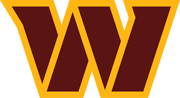

Welcome to the introduction fanpage for the Washington Commanders, one of the historic nfl franchises.
Here you will find a background, videos of highlights, photo gallery.
If you don't believe me, check out this Team History page. They were one of the starting teams of the NFL and made their debut in 1932 as the Boston Braves
Check out Commanders highlights Here.
